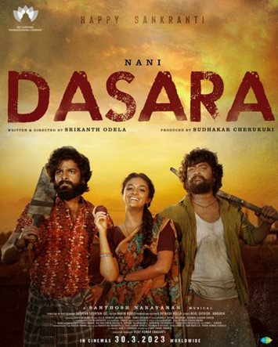

Dasara Review: Second Half Syndrome

Rating:⭐⭐⭐
Dasara is an action thriller film, starring Nani and Keerthy Suresh in the lead roles, directed by Srikanth Odela. This film
was a mass comericial treat for all Nani fans, seeing this as Nani's first mass commerical film. The first half of the film was
fantastic, but followed by a poor second half. The climax shot was the highlight of this film. The music by Santhosh Naranyan
however, was a huge disappointment for me, considering I expect SaNa ot deliver bangers. The only song, that was good was Chamkeela
Angeelsi. The BGM was also subpar. This would have potential to be Nani's best film in his career, though it had its flaws. Overall, a decent
film.